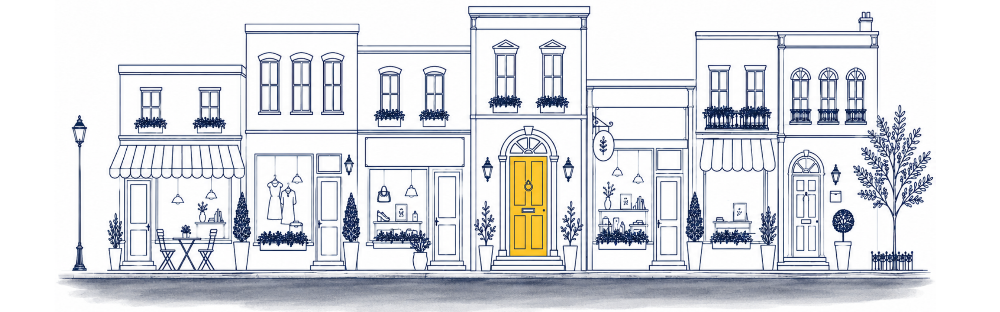
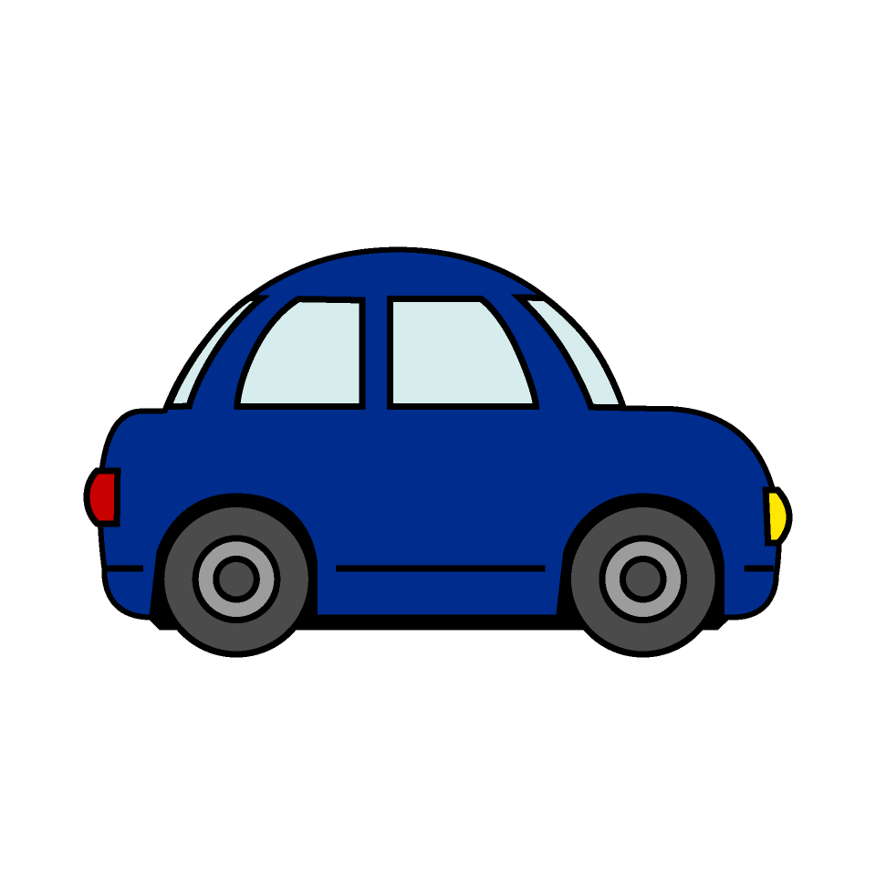
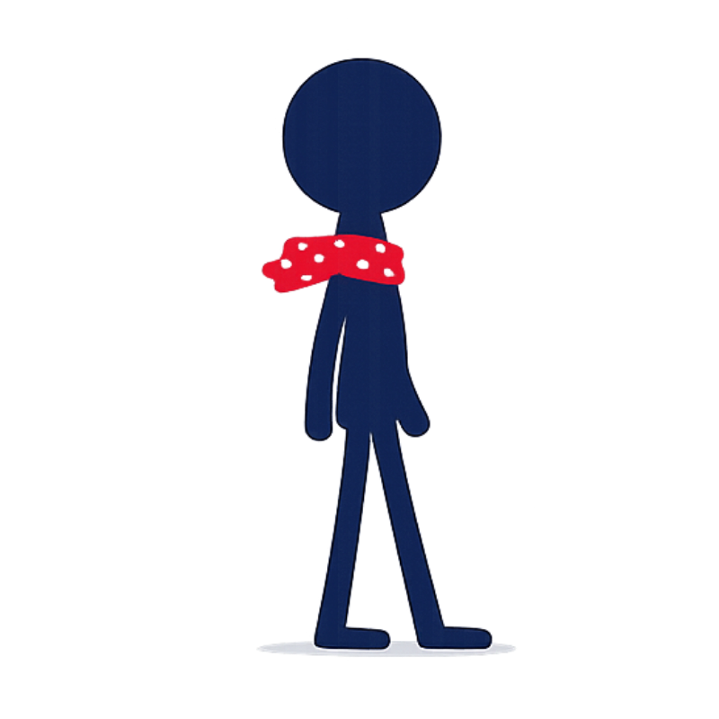

Running a business asks a lot of a person, so it makes sense that the outside doesn't always keep pace with the work happening inside. That's not neglect. It usually means the attention is already spoken for.
We focus on the places people see first: the words, pages, replies, and follow-ups that shape how people experience your business once they find you. Whether they find you through Google, a referral, or an AI recommendation, what they see when they arrive is what we get right.
Start with the piece that needs attention now, or build across the path over time.
Click any stop or use the arrows to move through.


Listings, bios, and the places people meet you before your website. If it is scattered or out of date, they judge before you have said a word.
Not every business needs a new site. Some need theirs fixed. Some want it handled entirely. Here is how we approach each one.
Every site we build or fix is structured so that search engines and AI tools can understand what your business does and recommend you to the right people. That is not an add-on. It is how we work.
You've made it this far, and you might be wondering where the marketing is.
We're not anti-marketing. Far from it.
We want your marketing to convert. That's the point of all of it. But spending on ads and campaigns before the experience behind them is ready is how good businesses end up frustrated, paying to send people toward something that isn't set up to catch them.
So we get the foundation right first. Once it is, here is what that opens up.
Request a free Drive-By. We will take an honest look at your in-market experience and tell you what we see — and where we would begin.
Request a free Drive-ByFree · No pitch · No commitment